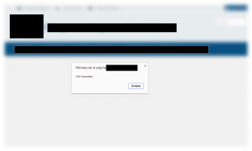
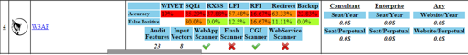
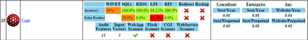

{kind=link}
En el Análisis de Vulnerabilidades es muy frecuente que se realicen
varios test / scanner con diferentes herramientas para llevar a cabo una
eliminación de falsos positivos (especialmente durante Auditorias de
Seguridad a aplicación WEB). Una vez tienes el resultado, se verifican
manualmente los resultados con objeto de ofrecer un informe con el
mínimo número de falsos positivos posibles.
En un CSIRT (*<span
style=“background-color: white; color: #252525; font-family: sans-serif; font-size: 14px; line-height: 22.3999996185303px;“>Computer
Security Incident Response Team*), una de sus funciones es el
descubrimiento y análisis de vulnerabilidades; Fue durante un análisis
rutinario donde ocurrio algo curioso que paso a comentar a continuación.
Durante la revisión manual de
un análisis de vulnerabilidades <span
style=“text-align: justify;“>a una página WEB<span
style=“text-align: justify;“> encontré discrepancia entre varias
herramientas, en particular entre el resultado obtenido con
w3af y
Vega<span
style=“text-align: justify;“>, donde una herramienta (VEGA) informaba de
una posible vulnerabilidad XSS, mientras que otra ni si quiera lo
mencionaba.
En la verificación manual, el típico
<script>alert(1);</script>, tampoco mostraba ninguna
constancia de la existencia de dicha vulnerabilidad XSS, probando
algunas de las variantes, encontré al final una sentencia que
confirmaría la existencia de la vulnerabilidad:
|  |
| POC - XSS Vulnerable |
{kind=link}
Comando (XSS):
http://www.example.com/index.php?var='<script>alert('XSS Vulnerable');</script>Fue entonces, cuando decidí buscar información sobre la precisión que
tenia la herramienta w3af en el análisis de vulnerabilidades y encontré
un proyecto Open Source (WAVSEP)
que se encarga precisamente de evaluar herramientas de seguridad,
aplicando varias pruebas sobre entornos vulnerables.
El ultimo informe [WAVSEP
2013⁄2014](http://sectooladdict.blogspot.com.es/2014/02/wavsep-web-application-scanner.html),
se analizan múltiples herramientas de seguridad tanto comerciales como
open source; y si accedéis a la página web con el brenchmark (score
board), encontrareis un completo análisis de cada herramienta con la
precisión, falsos positivos, etc ordenado por tipo de ataque (XSS, SQLi,
..).
|  |
| W3af - WAVSEP Score |
{kind=link}
Curiosamente, w3af no sale muy bien parado en éste análisis, y si
además, puedo confirmar que no detecto una vulnerabilidad del tipo XSS,
lo que me lleva a descartar la herramienta y buscar otra que sea open
source.
|  |
| Vega - WAVSEP Score |
{kind=link}
En la puntuación (score) del brenchmark, VEGA (la herramienta que había
utilizado y que ha detectado dicha vulnerabilidad XSS), obtiene muy buen
resultado (0% falsos positivos en XSS reflected), si a esto le unimos
que w3af obtenía también algunos otros falsos positivos.
Fue el momento de examinar con algo de más detenimiento el brenchmark y
encontré wapiti, una herramienta de línea de comando escrita en python,
múltiples formatos de salida y que además obtiene mejor puntuación en el
brechmark que w3af.
{kind=link}
Realice un test de la herramienta en la misma página web, ejecutando
solamente el motor de XSS, y lo detecto a la primera. Además la
herramienta tiene un modulo de detección de XSS persistentes, lo que lo
hace aún más interesante.
Será en mi próximo artículo cuando hablaré de la herramienta
wapiti, que esta incluida en
KaliLinux, pero que también se encuentra disponible para windows (Pyexe)
y en su versión de desarrollo, SVN incluye un modulo de detección de
shellshock (ultima actualización SEP/14).
#ST2Labs
#ACS iSecurity
#CSIRT Team Leader
@ACSHackLabs
@ST2Labs